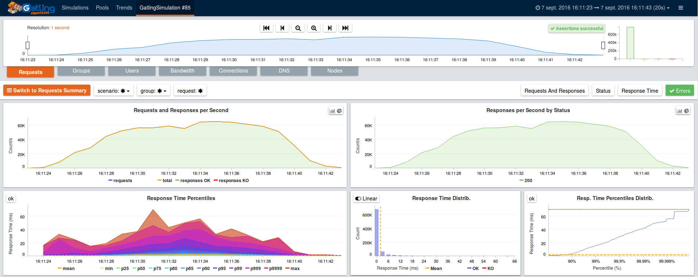
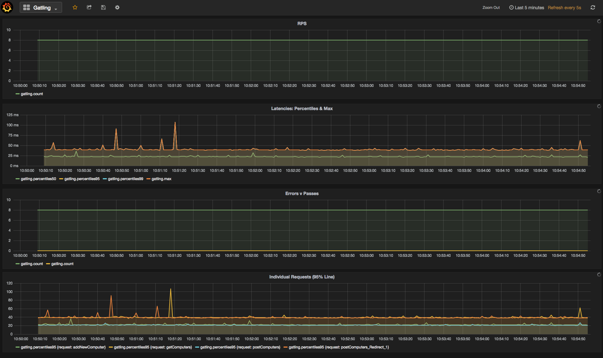

By default, Gatling only provides live feedback in the console output, and generates static HTML reports.
Still, it’s possible to get live feedback.
FrontLine is a commercial product from GatlingCorp, the company behind Gatling.
Amongst other features like clustering support, advanced integration with CI tools (Jenkins, TeamCity and Bamboo) and with Grafana, FrontLine offers entreprise-grade realtime monitoring and metrics persistence.
| alt: | FrontLine |
|---|
For more information, please get in touch at contact@gatling.io.
Gatling can provide live metrics via the Graphite protocol which can be persisted and visualised.
The sections below describe how to configure Gatling with InfluxDB and Graphite, and use Grafana as a graphing library. We also present a lo-fi solution which prints parsed Graphite data to standard out.
In the gatling.conf add “graphite” to the data writers and specify the host
of the Carbon or InfluxDB server.
data {
writers = [console, file, graphite]
}
graphite {
host = "192.0.2.235" # InfluxDB or Carbon server
# writeInterval = 1 # Default write interval of one second
}
InfluxDB is one of the new crop of time-series databases [1]. It is self-contained, easy-to-install and resource efficient.
Install InfluxDB through your package manager.
Add the below to the Graphite section of /etc/influxdb/influxdb.conf
[[graphite]]
enabled = true
database = "gatlingdb"
bind-address = ":2003"
protocol = "tcp"
consistency-level = "one"
separator = "."
templates = [
"gatling.*.*.*.count measurement.simulation.request.status.field",
"gatling.*.*.*.min measurement.simulation.request.status.field",
"gatling.*.*.*.max measurement.simulation.request.status.field",
"gatling.*.*.*.percentiles50 measurement.simulation.request.status.field",
"gatling.*.*.*.percentiles75 measurement.simulation.request.status.field",
"gatling.*.*.*.percentiles95 measurement.simulation.request.status.field",
"gatling.*.*.*.percentiles99 measurement.simulation.request.status.field"
]
$ sudo service influxdb start
From the gatling-sbt-plugin-demo project run the ComputerWorld simulation, and
$ influx -database 'gatlingdb' -execute 'SELECT * FROM gatling LIMIT 10'
You should be presented with something similar to this:
name: gatling
-------------
time count max min percentiles50 percentiles75 percentiles95 percentiles99 request simulation status
1461834409000000000 3 36 24 36 36 36 36 addNewComputer computerworld all
1461834409000000000 3 94 43 54 54 94 94 getComputers computerworld ok
1461834409000000000 3 42 23 34 34 42 42 postComputers computerworld ok
1461834409000000000 12 94 23 42 43 57 94 allRequests computerworld ok
1461834409000000000 3 57 42 43 43 57 57 postComputers_Redirect_1 computerworld ok
1461834409000000000 0 0 0 0 0 0 0 addNewComputer computerworld ko
1461834409000000000 3 36 24 36 36 36 36 addNewComputer computerworld ok
1461834409000000000 0 0 0 0 0 0 0 postComputers_Redirect_1 computerworld ko
1461834409000000000 3 57 42 43 43 57 57 postComputers_Redirect_1 computerworld all
1461834409000000000 0 0 0 0 0 0 0 getComputers computerworld ko
Graphite can be installed through Synthesize on Ubuntu 14.04
In $GRAPHITE_HOME/conf/storage-schemas.conf:
[Gatling stats]
priority = 110
pattern = ^gatling\..*
retentions = 1s:6d,10s:60d
If you use a different writeInterval in your Graphite data writer configuration, make sure that your smallest retention is equal or greater than your writeInterval.
In $GRAPHITE_HOME/conf/storage-aggregation.conf:
[sum]
pattern = \.count$
xFilesFactor = 0
aggregationMethod = sum
[min]
pattern = \.min$
xFilesFactor = 0.1
aggregationMethod = min
[max]
pattern = \.max$
xFilesFactor = 0.1
aggregationMethod = max
[default_average]
pattern = .*
xFilesFactor = 0.3
aggregationMethod = average
In collectd.conf
...
LoadPlugin write_graphite
...
<Plugin write_graphite>
<Node "example">
Host "receiving.server.hostname"
Port "2003"
Protocol "tcp"
LogSendErrors true
Prefix "collectd"
Postfix "collectd"
StoreRates true
AlwaysAppendDS false
EscapeCharacter "_"
</Node>
</Plugin>
...
Grafana is a popular open-source graphing application.
There are binaries for all the major GNU/Linux distributions.
Once Grafana is installed and the service is running navigate to :3000 and sign-in as admin/admin (change in /etc/grafana/grafana.ini at the earliest opportunity).
InfluxDB or Graphite can be set as a datasource as described here. There is a ready made Grafana template if InfluxDB is used as a datasource. The graphs should look similar to the below when running a simulation:
The ports 2003 (Graphite protocol), 8086 (InfluxDB network communication) and 3000 (Grafana) will need to be exposed on the Grafana-InfluxDB box.
Netcat can be used to listen to the Graphite port. The below awk script parses the data.
BEGIN{
print "--------- stats ....... timestamp RPS error_percent 95percentile_response_time active_users -----";
curr=0
}
{
if($NF != curr) {
print $NF" "n" "epct" "ptile" "u;
}
curr=$NF
}
/allRequests.all.count/ {n=$2}
/allRequests.ko.count/ {e=$2; if(n==0){epct=0}else{epct=int(e/n*100)}}
/allRequests.ok.percentiles95/ {ptile=$2}
/users.allUsers.active/ {u=$2}
To run the script:
nc -l 2003 | awk -f a.awk
Footnotes
| [1] | A time series is a sequence of data points that are measured over time and a time-series database optimises that data. |